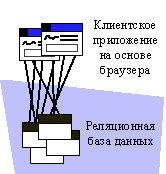

| Концепция: Шаблоны распределения |
 |
|
| Связанные элементы |
|---|
Узлы, процессоры и устройстваПроцессоры и устройства представляют собой общие стереотипы узла. Разница между ними на первый взгляд неочевидна, поскольку у многих устройств могут быть собственные процессоры. Однако различие между процессорами и устройствами заключается в том, какое программное обеспечение выполняется в них. Процессоры выполняют программы и программное обеспечение, специально созданные для разрабатываемой системы. Процессы - это вычислительные устройства общего назначения, наделенные определенной вычислительной мощностью, памятью и способностью выполнять инструкции. Устройства выполняют программное обеспечение, написанное для управления выполнением функций устройства. Устройства обычно подключены к процессорам, контролирующим их работу. В большинстве случаев устройства выполняют встроенное программное обеспечение и непригодны для выполнения программ общего назначения. Набор функций устройств зависит от их программных драйверов. Шаблоны распределенияСуществует несколько типичных шаблонов распределения, зависящих от набора функций системы и типа приложения. Довольно часто шаблонами распределения неформально пользуются для описания "архитектуры" системы, хотя в полную архитектуру помимо шаблонов распределения входит масса других составляющих. Например, системы часто описывают как "построенные на архитектуре клиент-сервер", хотя "клиент-сервер" - это только характеристика шаблона распределения, применяемого в архитектуре. Поэтому вопросы, связанные с распределением системы, очень важны, равно как велика степень влияния этих вопросов на архитектурные решения. В примерах шаблонов распределения, приведенных ниже, используются определенные предположения относительно ряда характеристик системы, ее производительности, особенностей и архитектуры процесса. Эти шаблоны применяются для решения разных задач, и их реализация сопряжена с разными сложностями. Архитектуры клиент-серверВ так называемых "архитектурах клиент-сервер" предусмотрены специализированные сетевые узлы, называемые клиентами, и узлы, называемые серверами. Клиенты выступают в роли потребителей услуг, предоставляемых серверами. Клиент обычно обслуживает только одного пользователя и зачастую отвечает за предоставление графического интерфейса (GUI), тогда как сервер обычно обслуживает нескольких клиентов одновременно, а примерами типичных служб могут служить базы данных, защита и печать. "Логика приложения", или логика бизнеса, в таких системах обычно распределена между клиентами и серверами. Распределение логики бизнеса называют структурой разделов приложения. На следующем рисунке клиент A представляет собой пример двухуровневой архитектуры, в которой большинство логики приложения находится на сервере. Клиент B представляет собой характерный пример трехуровневой архитектуры, в которой службы реализованы на базе сервера бизнес-объектов. Клиент C - пример типичного Web-приложения.
Разновидности архитектур клиент-сервер В традиционных системах "клиент-сервер" основная часть логики бизнеса реализована на стороне клиентов, хотя некоторые функции отведены серверам - например, функции, связанные с частым обращением к данным, хранящимся на сервере. Такая реализация позволяет снизить интенсивность передачи данных по сети, которая в большинстве случаев является дорогостоящим мероприятием (поскольку на порядок или два порядка уступает в скорости обмену данными между процессами). Некоторые характеристики:
Трехуровневая архитектураТрехуровневая архитектура - это особая разновидность архитектуры "клиент-сервер", в которой функции разнесены на три логических раздела: службы приложений, бизнес-службы и службы данных. Логические разделы могут соответствовать трем или большему количеству физических узлов.
Пример трехуровневой архитектуры Распределение функций по трем группам осуществляется в соответствии с типичным распределением приложений на практике. Службы приложений, как правило, снабжаются графическими интерфейсами и выполняются на выделенных настольных рабочих станциях с графическими оконными операционными средами. Изменение набора функций чаще всего бывает продиктовано соображениями эстетики и в первую очередь обстоятельствами человеческого фактора. Службы данных, как правило, реализуются на основе сервера базы данных, работающего на одной или нескольких высокопроизводительных системах, объединенных в сеть и обслуживающих сотни или тысячи пользователей. Необходимость изменения служб данных обычно бывает продиктована изменением представления или структуры информации в базе данных. Бизнес-службы обычно обеспечивают выполнение бизнес-процессов. Они обрабатывают и синтезируют информацию, полученную от служб данных, и передают ее в службы приложений. Как правило, бизнес-службами пользуется большое количество сотрудников, и поэтому службы размещаются также на специализированных серверах, хотя в принципе могут находиться на одних серверах со службами данных. Разделение служб на группы позволяет организовать довольно надежную структуру расширения системы: возможность добавления серверов и регулировки баланса между серверами данных и серверами бизнес-служб дает дополнительную свободу масштабирования. Архитектура "тяжелых клиентов"Тяжелыми называются клиенты, на которых выполняются почти все приложения (за исключением так называемой двухуровневой архитектуры, в которой службы данных выносятся на отдельный узел). Службы приложений, бизнес-службы и службы данных работают в системе клиента, а сервер базы данных, как правило, работает в отдельной системе.
Классическая двухуровневая архитектура и архитектура тяжелых клиентов Тяжелые клиенты отличаются сравнительной простотой проектирования и компоновки в сочетании со сложностью транспортировки (обычно это большие и массивные системы) и обслуживания. Поскольку для повышения производительности данные клиентов кэшируются в локальных системах, возникают серьезные сложности с синхронизацией локального кэша и обеспечением целостности данных. Изменение общих объектов, хранящихся в нескольких экземплярах локального кэша, требует больших усилий по координации и синхронизации, а также приводит к повышению интенсивности обмена данными по сети. Архитектура "тяжелых серверов"На противоположном по отношению к тяжелым клиентам конце спектра находится архитектура "тяжелых серверов" или "аскетичных клиентов". Типичным примером может служить приложение браузера, показывающего набор страниц в формате HTML - в данном случае можно говорить о практически полном отсутствии приложений на клиенте. Почти вся работа выполняется на одном или нескольких Web-серверах и серверах данных.  Web-приложение Web-приложения очень просто распространять и изменять. Они сравнительно недороги в разработке и поддержке (поскольку почти всю инфраструктуру приложений предоставляют браузер и Web-сервер). В то же время эти приложения могут не обеспечивать достаточного контроля над приложением и склонны служить источником основной нагрузки на сеть, если они недостаточно хорошо спроектированы (а иногда - даже если спроектированы хорошо). Распределенная архитектура "клиент-сервер"В этой архитектуре службы приложений, бизнес-службы и службы данных находятся на разных узлах, причем для бизнес-служб и служб данных зачастую используются специализированные серверы. Это полный вариант реализации трехуровневой архитектуры. Одноранговая архитектураВ одноранговой архитектуре каждый процесс или узел системы может быть клиентом и сервером одновременно. Функции распределяются и группируются таким образом, чтобы минимизировать нагрузку на сеть и добиться максимальной пропускной способности и утилизации систем. Эти системы обычно довольно сложны, и при их разработке нужно уделять особое внимание предотвращению тупиковых ситуаций и взаимной блокировки процессов, а также обработке ошибок. |
© Copyright IBM Corp. 1987, 2006. Все права защищены.. |